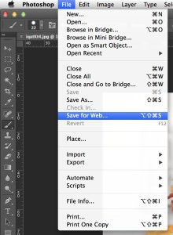
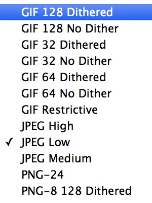

Compressing Image Files to Save Space
January 24, 2014If you have a lot of video elements in your website, you may find yourself running out of your storage quota. Compressing large images can help you regain some of that space back. Here’s how.
Compressing and Resizing Images using Adobe Photoshop
- Open the image in Photoshop.
- Go to File > Save for Web…
 - The following window should appear (click to enlarge):
- Using the dropdown menu in the upper-righthand corner, select another file format (GIF generally takes up less space but is lower quality, JPEG is in the middle, and PNG takes up the most space but is higher quality. GIF and PNG support transparency, JPEG kind of does).
 - File size savings (in KB) are shown in the bottom righthand corner of the window.
- Images can also be resized in the sidebar. Ensure proportions are locked before resizing.
{kind=link}
{kind=link}
{kind=link}
Resizing Images on a Mac using Preview
Open the image in preview and go to Tools > Adjust Size in the menubar:
{kind=link}
In the resulting dropdown window, change the pixels to the largest size you’ll ever need the image to be in your website. For instance, if you’re resizing the header banner and you know your theme is only 900px wide, then there is no need for your header banner image to be longer than 900px. Resize it so that it is only 900px. Make sure you have the “scale proportionally” checkbox checked. The resulting size section of the window will show you how much space you’re saving in KB.
{kind=link}
Comments